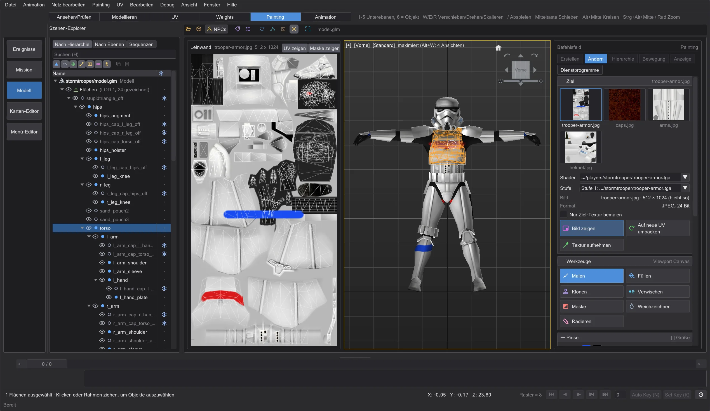
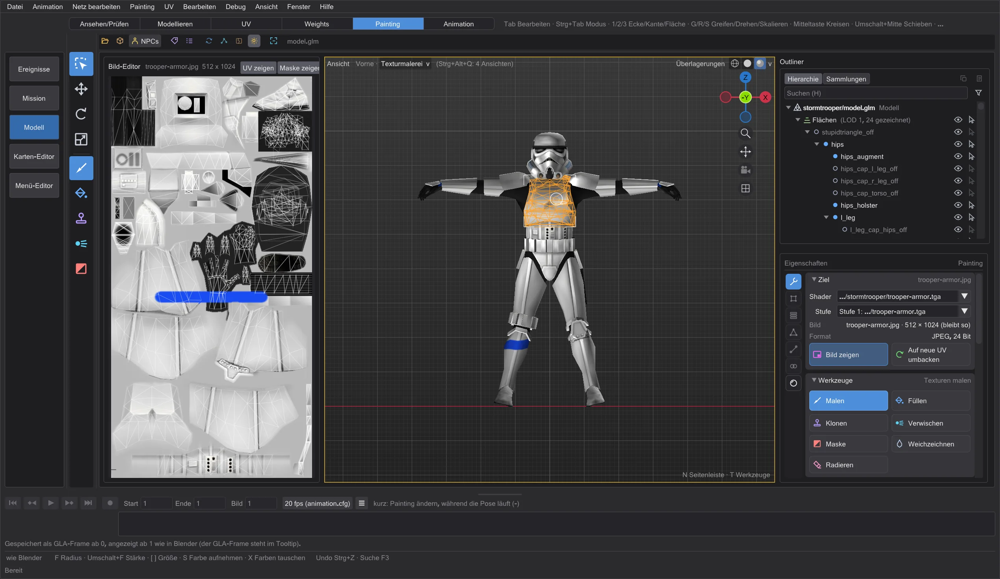

Model-Tab: Texturen bemalen
Male direkt auf die Bilder hinter den Shadern eines Modells - auf dem Modell in 3D, auch während die Animation läuft, oder flach im Bild - und schreibe sie für das Spiel in Größe und Format des Originals zurück.
Der Bereich Painting#
Wähle oben im Model-Tab den Bereich Painting. Das Bild einer Fläche ist das, welches das Spiel lädt: die Haut oder der Shader der Fläche, sonst die erste map-Stufe des gleichnamigen Shaderskripts. Links zeigt Leinwand (Blender-Modus: Bild-Editor) dieses Bild flach mit den UV-Dreiecken, rechts zeigt die Ansicht das Modell mit dem ganzen Shader wie im Spiel. Weil das Spiel jedes Bild nur einmal lädt, zeigt jede Stufe jeder Fläche mit diesem Bild das Gemalte, auch unter einem anderen Shader (etwa torso und torso_cull). Namen, die sich nur in der Endung unterscheiden (hair.tga in der Haut, hair im Shader), sind ebenfalls ein Bild, die Datei, die das Spiel zuerst lädt. In der Ansicht malt der Pinsel nur auf Flächen, deren Shader das Bild mit ihrer eigenen UV zeigt, nicht über Stufen mit tcGen oder tcMod. Ein Strich in der Ansicht bemalt das Bild der Fläche unter dem Pinsel - über Nähte und UV-Inseln hinweg ohne Bruch, weil der Tupfer eine Kugel auf dem Modell ist. Ein Strich im Bild malt in 2D. Der Kreis an der Maus zeigt den Radius. Jeder Strich ist ein Rückgängig-Schritt (Strg+Z, Strg+Y).

Das rechte Feld#
Die Gruppen des rechten Felds folgen der Reihenfolge der Arbeit. Ziel zeigt, worauf du malst: den Shader (einen anderen wählen malt auf ein anderes Bild), die Stufe des Shaders, wenn er mehrere Bilder zeichnet, und das Bild mit Größe und Format - beides bleibt wie im Original. Bild zeigen blendet das flache Bild neben der Ansicht ein und aus. Werkzeuge enthält die Werkzeuge als Knöpfe mit Symbol; das gewählte ist hervorgehoben. Pinsel stellt Farbe (zwei Farbfelder, tauschen, aufnehmen), Radius, Stärke und Abstand ein; Härte, Spiegeln, Stiftdruck, Rückseiten und Ausbluten stehen unter Erweitert. Ebenen listet die Ebenen von oben: das Auge blendet eine Ebene ein und aus, das Original ganz unten trägt ein Schloss, und unter der Liste stehen Mischart und Deckkraft der gewählten Ebene. Für das Spiel schreibt die bemalten Bilder; die Überschrift zählt sie. Wie 3ds Max stehen die Gruppen im Reiter Ändern des Befehlsfelds (Für das Spiel auch unter Dienstprogramme), wie Blender im Reiter Werkzeug des Eigenschaften-Editors (Ziel auch unter Material). Ein Klick auf eine Überschrift klappt die Gruppe zu.
Das Ziel folgt dem Pinsel: ein Strich in der 3D-Ansicht malt in die Textur jeder Fläche unter dem Pinsel, über Bilder und UV-Nähte hinweg; die Ebenen bleiben je Bild getrennt, und ein Rückgängig nimmt den ganzen Strich zurück. Ziel folgt der zuletzt bemalten Fläche; seine Vorschaubilder, Alt+Klick auf die Figur, die Pipette Textur aufnehmen oder ein Klick auf eine Fläche im Szenen-Explorer wählen eine Textur. Nur Ziel-Textur bemalen hält den alten Weg (nur die gewählte Textur).


Werkzeuge und Pinsel#
Malen, Füllen, Klonen (Strg+Klick setzt die Quelle), Verwischen, Maske, Weichzeichnen und Radieren stehen in der Gruppe Werkzeuge des rechten Felds - das, was in 3ds Max Viewport Canvas und in Blender Texturen malen ist -, im Menü Painting, im Rechtsklick der Ansicht und in der Suche. Radius, Stärke und Abstand stellen den Pinsel ein, die Härte (Abfall) steht unter Erweitert; mit einem Stift ändert der Druck Größe und Stärke. Die Tasten [ und ] machen den Pinsel einen Schritt kleiner oder größer (halten: weiter); im Bereich Painting gehören sie in beiden Bedienmodi dem Pinsel. In der Ansicht folgen die Tupfer der Linie, die du auf dem Bildschirm ziehst, jeder auf der dort sichtbaren Fläche, wie in Substance Painter und Blender - ein schneller Strich von einer Hand zur anderen malt nur dort, wo der Pinsel über das Modell ging, nichts über dem Hintergrund. Im Blender-Modus ziehen F und Umschalt+F Radius und Stärke, S nimmt eine Farbe auf, X tauscht die beiden Farben, 1 zeigt die Maske. Spiegeln malt jeden Tupfer ein zweites Mal auf der gespiegelten Seite des Modells (Achse x bei Figuren). Flächen, die mehr als 80 Grad von der getroffenen weg zeigen, bleiben unberührt, außer Rückseiten ist an.
Ebenen, Maske und Nähte#
Das Originalbild des Spiels ist die unterste Ebene und bleibt unberührt, solange du auf einer Ebene darüber malst (Neue Ebene). Jede Ebene hat eine Deckkraft, eine Mischart (normal, multiplizieren, addieren, negativ multiplizieren, ineinanderkopieren) und lässt sich ausblenden; Nach unten vereinen vereint sie mit der darunter. Die Maske schützt Texel vor jedem Werkzeug; Maske zeigen zeigt sie rot im Bild. Nach jedem Tupfer bekommen die Texel knapp außerhalb der UV-Inseln die Farbe des nächsten bemalten Texels (Ausbluten, Vorgabe 4 Texel), damit in der Ferne keine dunklen Nähte entstehen. Wurden die UV im Bereich UV geändert, bringt Auf neue UV umbacken jede Ebene und die Maske von der alten UV auf die neue.
Für das Spiel#
Für das Spiel bauen schreibt jedes bemalte Bild unter seinem Spielpfad (etwa models/players/stormtrooper/...) in den Ausgabeordner - einen Mod-Ordner oder fs_homepath, nie den Spielordner. Größe und Format bleiben wie im Original: eine .tga behält Tiefe und Kompression, eine .jpg wird mit den Quantisierungstabellen des Originals geschrieben, eine .png bleibt .png. Nicht bemalte Bilder werden nicht geschrieben, das Spiel lädt weiter das Original. Movie Duels sucht .jpg vor .tga, darum behält die Datei Namen und Endung des Originals. Die Ebenen bleiben in JK Studio.